Photo credits
Every cat photo on MeowWise is listed here with its original file, photographer and license. All 14 photos are dedicated to the public domain under CC0 1.0 by their photographers on Wikimedia Commons, so no attribution is legally required, but we credit them anyway. We checked each license on the file's own Commons page on 9 October 2026. Photos were resized and converted to WebP. All drawings, icons and game art are original works by MeowWise.
| Photo | Source file | Photographer | License |
|---|---|---|---|
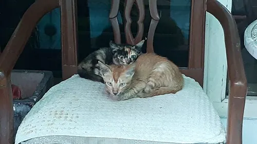 | A black and an orange kitten 10.jpg | Jeromi Mikhael | CC0 1.0 (public domain dedication) |
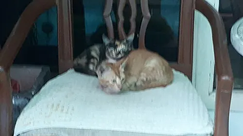 | A black and an orange kitten 3.jpg | Jeromi Mikhael | CC0 1.0 (public domain dedication) |
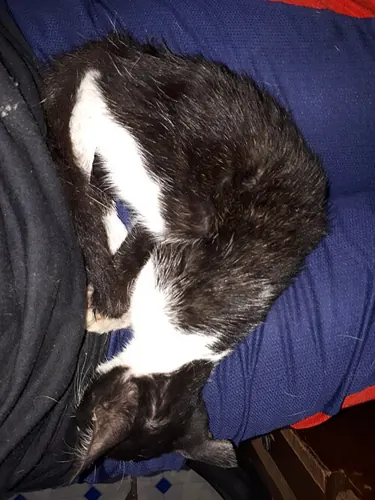 | A black and white kitten 2.jpg | Jeromi Mikhael | CC0 1.0 (public domain dedication) |
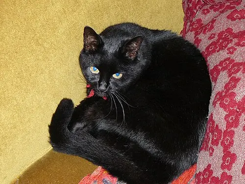 | Black cat curled up on a sofa in Newcastle upon Tyne, UK.jpg | Salwa Farwaneh Dameh | CC0 1.0 (public domain dedication) |
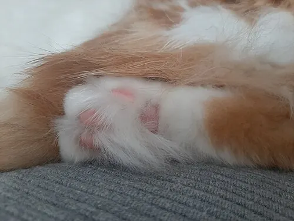 | Domestic cat paw.jpg | Flanoz | CC0 1.0 (public domain dedication) |
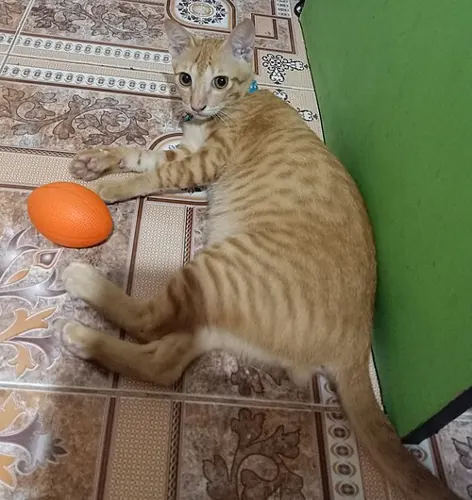 | Ginger kitten with an orange rubber rugby.jpg | Aiaikz | CC0 1.0 (public domain dedication) |
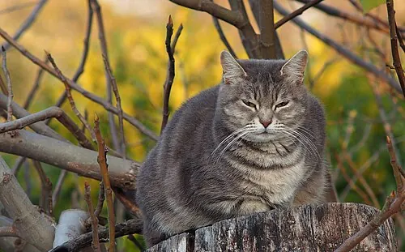 | Grey Domestic Cat.jpg | gayulo | CC0 1.0 (public domain dedication) |
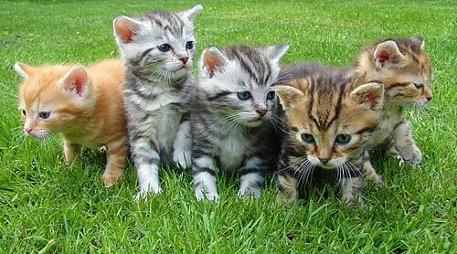 | Litter of kittens.jpg | Jan-Mallander | CC0 1.0 (public domain dedication) |
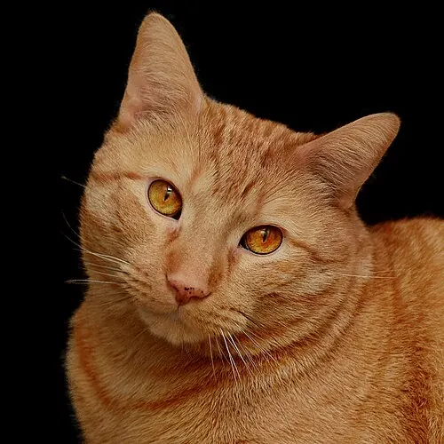 | Orange tabby cat-932269.jpg | Leroy_Skalstad | CC0 1.0 (public domain dedication) |
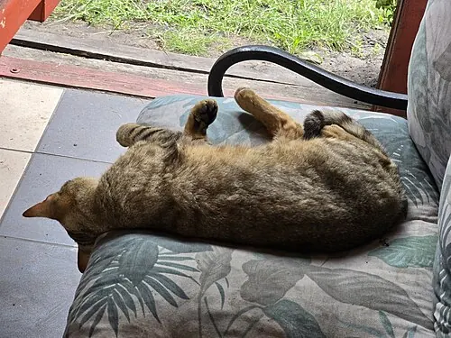 | Sleeping domestic cat in Grodztwo (Kowal), Kuyavian-Pomeranian Voivodeship, Poland, July 2025.jpg | MichalPL | CC0 1.0 (public domain dedication) |
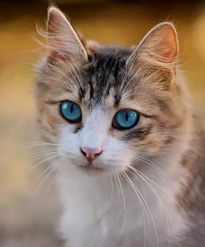 | Tabby cat with blue eyes-3336579.jpg | AdinaVoicu | CC0 1.0 (public domain dedication) |
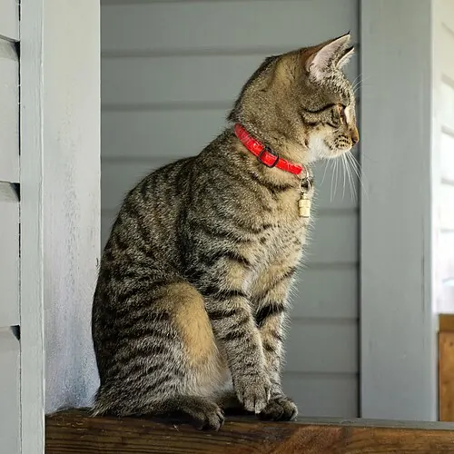 | Tabby kitten in Brastad.jpg | W.carter | CC0 1.0 (public domain dedication) |
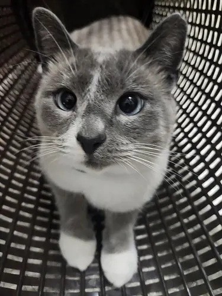 | White and gray silverpoint domestic cat lying down in basket.jpg | Poryden | CC0 1.0 (public domain dedication) |
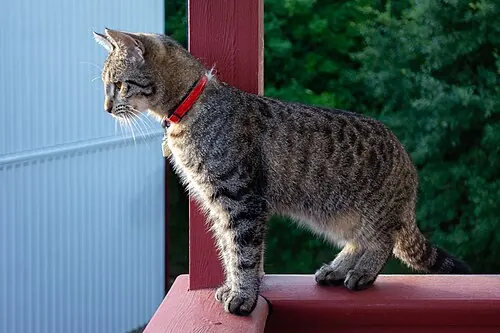 | Young tabby cat keeping watch.jpg | W.carter | CC0 1.0 (public domain dedication) |


,_Kuyavian-Pomeranian_Voivodeship,_Poland,_July_2025.jpg){kind=link}